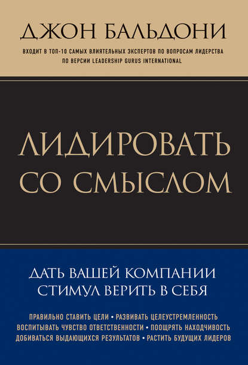

"Лидировать со смыслом. Дать вашей компании стимул верить в себя"
Джон Бальдони
Описание
Руководители всех уровней дорого дали бы за то, чтобы под их началом работали преданные сотрудники, всегда готовые сделать больше, чем от них ожидают. Книга, которую вы держите в руках, – подробное руководство по воплощению этой мечты в жизнь. Практические советы, мнения экспертов, рассказы о признанных лидерах, вдохновляющие истории, результаты опросов – все это поможет руководителям добиться от подчиненных целеустремленности, оптимизировать их деятельность и в итоге добиться впечатляющих результатов.
Скачать
- Эл. книгой на ЛитРес